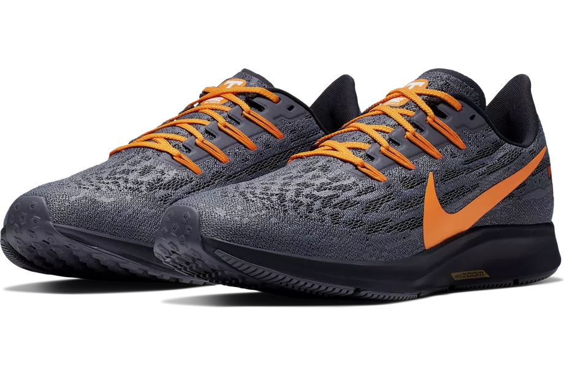

Nike FastLane
Nike sportswear - Spring 2020
Designed for Kyrie Irving's creative and unpredictable game, the Kyrie 6 focuses on comfort, control and energy
return to help him go fast and stay fresh. Bouncy cushioning is paired with soft yet supportive foam for
responsiveness and smooth heel-to-toe transitions, while the midfoot strap and plush, padded collar lock him in
and help keep him a step ahead of the competition.